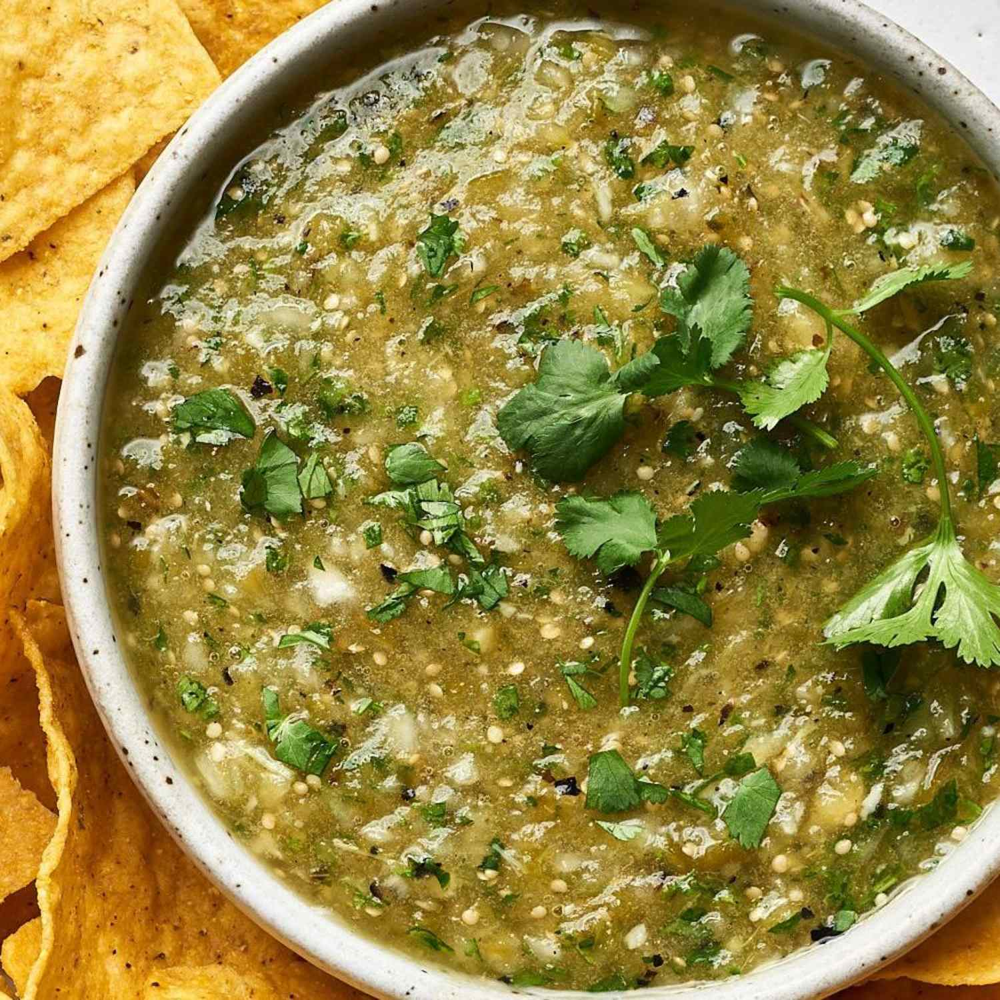

Salsa Verde

Here's a classic salsa verde recipe-fresh and easy to make. This version uses
tomatillos for that signature bright green color and flavor.
Ingredients
- 1 lb Tomatillo
- 1 Garlic
- 1 White Onion
- 1-2 Jalapeno
- 1/2 cup of cilantro leaves
- Salt to taste
Steps
- Boil tomatillos,jalapenos, half white onion, and
garlic in water for 10-15 minutes, or at least until
the tomatillos are soft and a darker color.
- Drain the water and blend together
- Once the ingredients are blended is time to pour into a bowl
mix it together and add salt if is needed.
- As a suplemental, chopped half of the onion and some cilantro.
Add to the salsa for more flavor and mix it.
Home